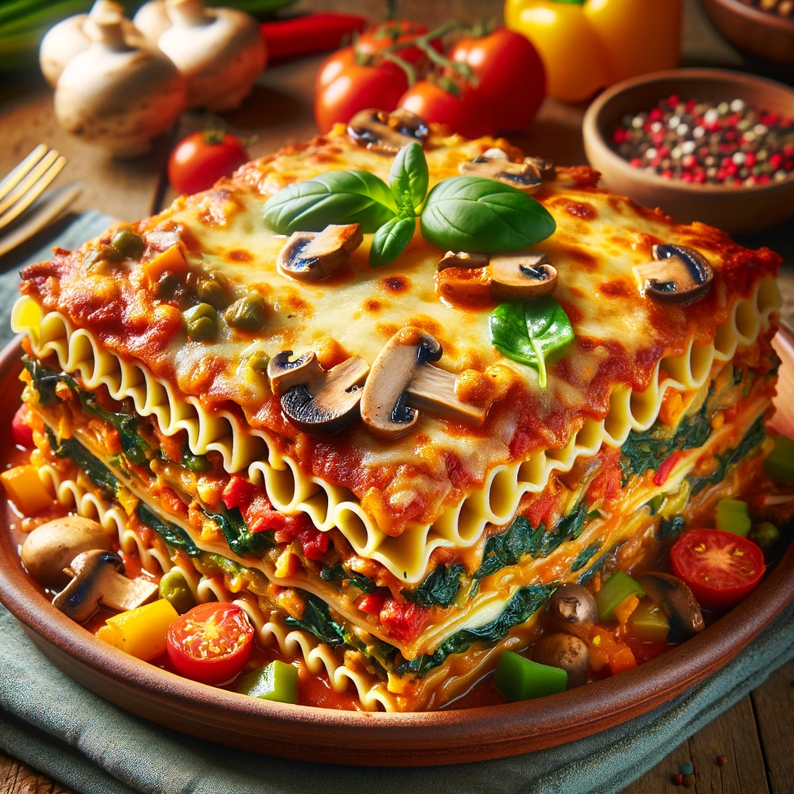

vegan veggie lasagna

A Symphony of Flavors: Vegan Veggie Lasagna Delight
This delightful dish presents a mouthwatering vegan veggie lasagna, a masterpiece of culinary artistry designed to cater to the palates of those who cherish the richness of plant-based cuisine. At first glance, the lasagna greets the eye with its golden, bubbly top layer of vegan cheese, melted to perfection, promising a creamy texture with every bite. Beneath this inviting surface lie meticulously layered sheets of whole grain pasta, each layer enveloping a vibrant medley of vegetables including spinach, mushrooms, and bell peppers. These vegetables are not only a feast for the eyes with their bright colors and textures but also offer a burst of fresh, earthy flavors that beautifully complement the robust, tangy tomato sauce enveloping them.
The construction of this lasagna speaks to a thoughtful balance of flavors and textures, ensuring that each forkful delivers a harmonious blend of creamy, chewy, and crisp. The vegan cheese, specially chosen for its ability to mimic the beloved characteristics of its dairy counterpart, adds a comforting richness without overshadowing the natural flavors of the vegetables. The addition of herbs and spices throughout the layers infuses the dish with depth and complexity, elevating the simple ingredients to a level of sophistication. Served on a rustic plate, the veggie lasagna not only offers a deliciously satisfying dining experience but also stands as a testament to the possibilities of vegan cooking, proving that ethical eating can be both indulgent and flavorful.
Ingredients
For the Pasta:
- 2 cups semolina flour
- 1 cup water
- 1 tbsp olive oil
- 1 tsp salt
For the Tomato Sauce:
- 2 tbsp olive oil
- 1 onion, finely chopped
- 2 cloves garlic, minced
- 1 carrot, finely chopped
- 2 cans (14 oz each) crushed tomatoes
- 2 tsp dried oregano
- 2 tsp dried basil
- Salt and pepper, to taste
For the Vegan Ricotta:
- 1 block (14 oz) firm tofu, drained and crumbled
- 2 tbsp nutritional yeast
- 1 tbsp lemon juice
- 1 clove garlic, minced
- 1 handful fresh spinach, chopped
- Salt and pepper, to taste
Vegetable Layers:
- 2 zucchinis, thinly sliced
- 1 bell pepper, thinly sliced
- 8 oz mushrooms, sliced
- 1 cup fresh spinach
For the Vegan Cheese Topping:
- 1 cup raw cashews, soaked for 4 hours or overnight
- 1/2 cup water
- 2 tbsp nutritional yeast
- 2 tbsp nutritional yeast
- 1 tbsp lemon juice
- 1 tsp salt
- 1/2 tsp garlic powder
Instructions
Making the Pasta:
- In a mixing bowl, combine semolina flour, water, olive oil, and salt. Knead until a smooth dough forms. Let it rest for 30 minutes.
- Roll the dough into thin sheets with a pasta machine or a rolling pin. Cut into lasagna noodle shapes. Set aside.
Preparing the Tomato Sauce
- Heat olive oil in a saucepan over medium heat. Add onion, garlic, and carrot; sauté until softened.
- Add crushed tomatoes, oregano, basil, salt, and pepper. Simmer for 20 minutes, stirring occasionally. Set aside.
Making the Vegan Ricotta:
- In a bowl, combine crumbled tofu, nutritional yeast, lemon juice, garlic, chopped spinach, salt, and pepper. Mix until well combined. Set aside.
Preparing the Vegetables:
- Sauté zucchinis, bell pepper, and mushrooms in a pan over medium heat until slightly softened. Set aside.
Making the Vegan Cheese Topping:
- Blend soaked cashews, water, nutritional yeast, lemon juice, salt, and garlic powder until smooth and creamy.
Assembling the Lasagna:
- Preheat oven to 375°F (190°C).
- Spread a thin layer of tomato sauce on the bottom of a baking dish.
- Layer the lasagna sheets, followed by a layer of vegan ricotta, sautéed vegetables, and a bit of the tomato sauce. Repeat the layers, finishing with a layer of lasagna sheets.
- Spread the vegan cheese topping evenly over the top layer.
- Cover with foil and bake for 25 minutes. Remove foil and bake for another 15 minutes or until the top is golden and bubbly.
- Let it cool for a few minutes before serving. Enjoy your homemade vegan veggie lasagna!